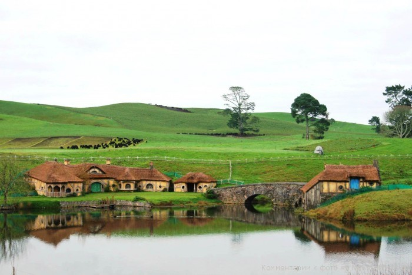
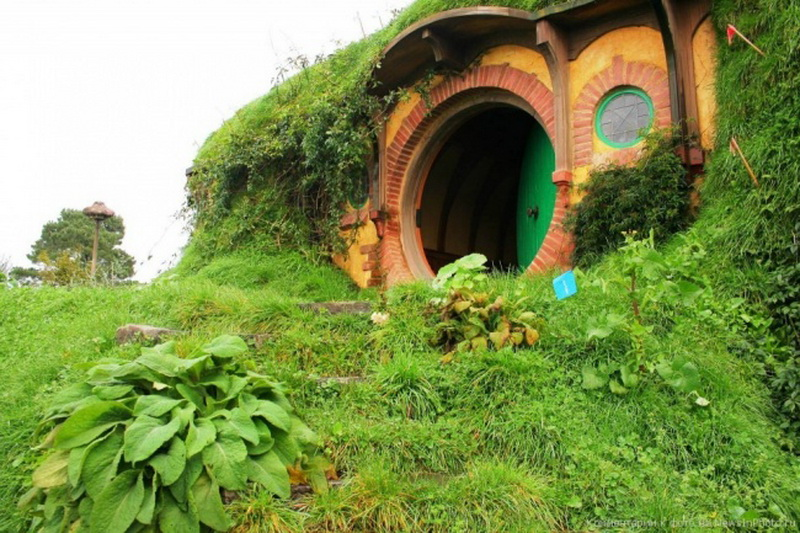

Матамата, інша назва – Хоббітон, було побудоване на території приватної вівчарської ферми. Її власники - три брата, двоє з який живуть там же, а третій у Матамата - маленькому містечку в 20 хвилинах їзди, розташованому серед зеленої горбистій аграрної місцевості. Після зйомок більшість декорацій було зруйновано, але дещо залишилося. Після виходу фільму на ферму почалося паломництво фанатів - господарі були вкрай незадоволені тим, що до них стали приходити люди з проханням показати їм, де знімався фільм. Таким образів виникла ідея створити туристський маршрут в "Хоббітона" щоб якось упорядкувати потік незваних туристів і звільнити господарів. Ідея виявилася вдалою - в даний час ферму відвідує близько 300 осіб на день.
Тур в Хоббітона коштує 50 доларів Нової Зеландії і займає близько трьох годин. В даний час турфірма намагається домогтися дозволу на відновлення Хоббітона. Згода господарів ферми (які є власниками землі) вже отримано, ведуться переговори з кіностудією, яка є власником збережених будівель.
Звичайно, декорації прийшли у занепад, ретельно оброблені напередодні зйомок городи та садки зникли з лиця землі, але незважаючи на це білі будиночки на тлі зелених пагорбів, затишно розкидані по схилах, виглядають дуже мило. Мирно пасуться вівці вносять своєрідне доповнення в цей пасторальний пейзаж. Ну і звичайно, для любителів фільму і книги "Володар кілець" це місце повно особливої чарівності. Трошки уяви - і можна побачити, як по вузькій доріжці, що в'ється серед пагорбів, їде, наспівуючи пісеньку, Гендалф з своєї возі, як виходить йому назустріч з дому на самій вершині пагорба старий друг Білбо, як вони курять трубки, дивлячись на долину внизу з озером і party-tree на березі (яке в фільмі було дубом, а насправді - сосна), де вже все готово для веселого свята.
Цю ідилію кілька порушує тільки те, що по зеленій оксамитовій траві, яка здалеку виглядає чистою, немов тільки що вимитого проливним дощем, небезпечно ходити - всюди продукти життєдіяльності милих кучерявого овечок... Їх так багато, що потрібно весь час дивитися собі під ноги. Не раджу їхати в Хоббітона у відкритому взутті, краще надягти важкі шкіряні черевики, які неспроста носять тут фермери.